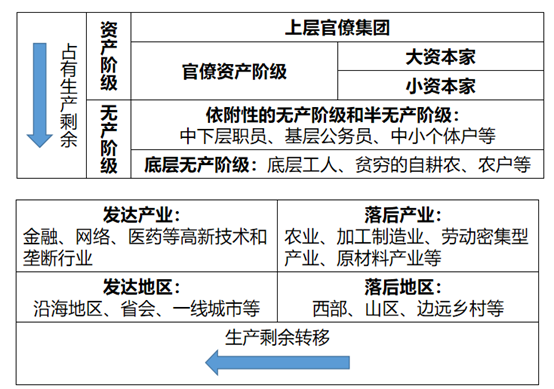

从十八世纪开始的大工业化进程，在蔓延至全球的过程中不断地摧毁着这个世界上大部分陈旧的国家和制度，将整个世界纳入到了资本主义体系之下。于是，全世界的阶级情况也随之发生了巨大的改变。资产阶级和无产阶级这一对双胞胎成为了历史舞台上的主角。时至今日，曾经轰轰烈烈的无产阶级革命运动如今逐渐式微，意识形态的碰撞中社会主义也落于下风，无产者的同盟已经近乎破裂，而资产阶级和资本主义制度却在不断地发展自身，用更加隐秘、复杂、全方位的手段去剥削和分化无产阶级，妄图让自己的统治千秋万代。
在这样的背景下，迈入了二十一世纪的新世界已经要比马克思的时代更加复杂了。全球共产主义运动进入了低潮，阶级矛盾被种种繁杂的社会现象所掩盖了，新的暴力革命的基础也尚未孕育。当然，不变的是资产阶级对无产阶级无止境的剥削和压迫。
同时，身在此山中的我们也无法准确地预言变革会在何时来到。或许矛盾其实已经濒临爆发，全面战斗就在明天。又或许我们仍然处在资本主义社会的上升期，真正的社会主义革命还要等到很久之后。总之，在今天仍然坚持着真正的社会主义理念的人，也必须暂时忍让。
但是，这是革命的妥协，而不是反革命的妥协。我们暂时的妥协不意味着自欺欺人，也不意味着放弃努力。我们首先要做的就是认清楚当代中国的阶级状况。认清这些，不是为了立刻带领被剥削阶级起来革命，而是为了更好地看清现实，通过理论和实际的相结合更好地理解马克思主义，是为了至少要将真正的社会主义思想的火种保存下来，并传播出去，让更多的人来捍卫这份理想。
今天的世界是一个支离破碎的世界，经济、文化、思想、政治上的差异与日俱增，阶级内部的分化也日益凸显，不搞清楚今天的阶级状况，就不能看清楚今天的经济与政治情况。
当今中国最底层的群体是广大文化水平和收入水平较低的农民、工人、服务人员等等，受困于出身和家庭环境，他们之中甚至有很多人连义务教育都无法完成，只能从事技术含量不高的体力劳动。
这个底层群体中的第一个组成部分就是大量的农民工。目前，中国农民工数量就有大约三亿，根据2017年的统计，接受过职业技术培训的农民工比例只有三成。他们主要从事第二产业和第三产业的工作。建筑业、制造业、餐饮业、居民服务业等行业的基层工作大部分都是他们担任的。从年龄层次来看，这部分群体当中较为年轻的人群主要聚集在制造业和服务业，厂仔、厂妹、服务员、外卖小哥等等是他们常见的称呼。而另外一些年龄较大的人群，由于大部分几乎没有什么技术能力，往往只能从事这些行业中最底层的工作，比如工地民工、小摊小贩、修理工、保洁、流水线工人等等。
根据国家统计局发布的2018年农民工监测调查报告显示，2018年我国共有农民工约2.88亿人，比上年增长0.6%。乡内就近就业农民工约1.16亿人，外出就业农民工约1.73亿人，外出就业中进城农民工约1.35亿人。从地区来看，输出农民工和输入农民工的主力地区都是东部较发达地区，但是贡献增长的主力地区是西部地区。在年龄构成上，30岁以下的工人占比逐年降低，从2014年的33.7%下降到了2018年的27.6%；50岁以上的农民工占比逐年提高，2014年为17.1%，2018年达到了22.4%。这体现了农民工群体一个结构性的变化：新生农民工数量逐渐降低。从事第三产业的农民工比重为50.5%，从事第二产业的比重为49.1%。
在另外一方面，在从事农业生产的第一产业部门里，底层无产阶级的代表则主要是一部分农村的自耕农、小规模的自营农户和农业企业的底层农业工人。
旧社会时代，由于小农经济还未破产，自耕农占有一点土地的所有权，也存在一定的生产剩余，他们被毛泽东同志归类于小资产阶级和半无产阶级。而在当代工业化的社会，土地这一农业最重要的生产资料属于集体所有，同时自耕农的那点生产剩余甚至连购买基本生存保障品都不一定足够。所以这些群体现在应当视为无产阶级。自耕农当中，最底层的群体以滞留在农村的老龄人口和残弱人口为主，他们的情况往往是子女外出打工，自己则在家务农，耕种自己所分配到的土地。由于他们主要采用独自耕作的小农生产方式，经济收益不高，忙碌一年的收获甚至可能比不上打工一个月的收入。这部分群体和农民工的关系十分紧密，也常常相互转化。在家庭经济状况较为困难的时候，甚至有些年龄较大的农村居民也要被迫外出务工。 而对于农业工人和承包土地较多、以自营农业为生的农户而言，情况则稍微好一点。截止2018年，我国的农业机械化率已经超过67%，主粮机械化率超过了80%，其中大部分是国有和集体所有的农垦农场。为这一产业部门贡献出劳动力的主力军就是农业工人，他们的主要收入是农场和农业企业的工资，在收入水平上比自耕农要好不少。但是这部分人群往往是由于国家对于一部分地区农业的规划而成为农业工人的，流动性较低。我认为，随着未来国家对于农业集体化的推动，会有一部分农民工、自耕农和自营农户得以成为这样的农业工人。但是，农业机械化和规模化也就意味着不需要那么多农业人口，未来也注定要有许多农民被迫与土地剥离，进入城市成为工人，接受第二和第三产业的剥削。 另外，对于大部分规模有限、无法形成行业联合的自营农户来说，他们的收入依赖于粮食作物、经济作物和牲畜的销售，其中主要是经济作物，粮食作物和牲畜的生产主力都是国有和集体农场了。这些种植户们直接接触的下游是国有或者私有的收购商。很多作物的收购价格都是国家指导价，这些价格一般并不高，近几年也有一部分经济作物开始准备实行市场化定价。对于这部分群体而言，其经济状况往往比较脆弱，很容易收到行情波动的影响和冲击。前几年农产品大量滞销的事例和这几年兴起的地方官员网络“带货”的情况，都是这一问题的表现。这是由于他们在整个产业链中的弱势地位导致的，想要根本地改变这一状况，可能只有通过规模化农业企业向上游延伸，将原材料生产部门也纳入其中才能解决。 我们可以从全国农业普查的数据中窥见一斑，根据第三次全国农业普查显示，截止2016年，全国农业生产经营人员共有3.14亿人，这个群体和农民工群体有部分重叠，纯粹进行农业生产的人数应该没有这么多。其中，55岁以上的人员比例达到了33.6%，这个比例也要比农民工群体高。从事种植业的人员占比最高，达到了92.9%。在这3.14亿人中，具有较大农业经营规模、以商品化经营为主的规模农业经营户所包含的经营人员（包括本户生产经营人员及雇佣人员）数量只有1289万人，这1289万人的结构和全部农业经营人员的结构有较大差异。年龄在55岁以上的比例下降到了20.7%，种植业从业比例则下降到了67.7%，排第二的畜牧业比例为21.3%。 也就是说，经济条件相对较好的农业产业经营人员和农业工人在第一产业的无产阶级群体中的比例其实十分低。这个无产阶级群体的主要组成人员还是自耕农和自营农户，尤其是种植户。而他们则主要来源于相对落后地区和乡村地区，他们的抗风险能力较差，社会保障并没有全面覆盖他们，其生活往往依赖于微薄和单一的农业作物销售收入。 未来农业生产如果全面走向机械化、集体化、工业化，自耕农和自营农户就会被逐渐消灭。随着我国农业人均生产力水平的提高，农业从业人员的数量或许会在短期有所提升，但是长期来看会呈现一个下降趋势，只有农业工人的数量会增加。那么，大部分无法转变为农业工人的自耕农和自营农户，未来的出路就是像现在的农民工一样，转化为第二、第三产业的工人，成为标准的无产阶级。但是，在资本主义经济制度的根本矛盾和全球矛盾逐渐激烈的情况下，我们的国家是否能够在国内和国外找到足够的市场来出售商品，好创造足够的就业供给呢？这将会是一个潜在的问题。又换句话说，在没有足够的就业供给时，国家需要去考虑这个问题，不会急速地推动农业生产全面机械化、集体化、工业化。 总体而言，这部分包含了农民工、贫穷自耕农和小型自营农户的底层无产阶级群体的数量可能在3到4亿，从数量上看很可能占到了整个中国劳动年龄人口（16-60周岁）的40%左右。这个数据主要是来自于一些并不官方的调查，不一定准确。另外，他们中还有一部分人超过或者不到劳动年龄却必须劳动，比如我的爷爷在70岁的时候仍然会参与种地。 底层无产阶级群体们一方面为整个国家创造了大量的原材料和基础产品，另一方面又为社会的大量基础产业提供了主要的劳动力，他们所能获得的回报却是整个社会中最少的，甚至连社会整体发展的成果也很难享受到。这就是市场经济和资本主义制度无法避免的，身处弱势一方的他们所能创造出来的“价值”在市场交换中就是这么微弱。这也注定了除了实行真正的社会主义制度，重新让无产阶级成为国家的主人以外，所有其它的方法都只能暂时地、片面地缓解他们的痛苦，而无法解决这一根本矛盾。 这部分群体中往往充满了对生存问题的困惑和痛苦，他们缺少完整的教育，无法理解自身的状况，不得不面对各方面的压迫，却又缺乏话语权和维护自身利益的合理方式，很容易出现极端情绪和（身体上和精神上）互相伤害的情况。这也就是为什么我们在媒体上常常看到一些的恶性犯罪事件多发生于相对落后地区和底层群体中。 这部分群体的劳动回报最低、受剥削程度最高。无论是在经济上还是政治上，他们所受到的压迫都是最大的。然而，可悲的是，虽然底层无产阶级这个群体十分庞大，但是他们却受不到应有的关注和关心。可以这么说，如果你和你的家庭是一个具有较高学历（比如大专以上）和稳定工作的城镇居民家庭，除非你是相关行业的直接参与者（比如工头、监工、领班、车间主任等），你在日常生活中根本不会和这个群体有普遍的联系。他们甚至不存在于我们这些“文明人士”的生活里，我们只可能在媒体和网络上了解他们，而这样的了解也是片面的、被加工过的。在看到他们的悲惨时，作为文明人士的我们往往愿意施舍一些没有成本的同情。在对他们进行具体接触和评价的时候，文明人士们却又往往会习以为常地鄙夷和厌恶他们的无知、落后、一切丑陋的行为。虽然嘴上不会直接说鄙视穷人，但是对贫穷和不平等所派生出的这些丑恶却可以大肆抨击，这甚至成为了国内网络的某种政治正确。但是，造就大部分丑陋行为的根本原因，正是整个不平等的社会，是吸了他们的血从而让我们这些文明人士享受到丰厚利益的剥削制度。 二、依附性更高的无产阶级和半无产阶级 由于我国现代的地区发展差距和产业发展差距，这部分群体的内部差异很大，主要是经济状况较好的城镇居民。他们在财务上的典型特征是大部分人具有一定资产，各项收入能够在覆盖生活保障的同时还有一定的剩余。而这个剩余的数量分布则较为广泛，可能每年有几万元，也可能有几十万（获得剩余更多的群体就可以逐渐积累为小资本家了）。他们中有较发达地区和较发达产业各类企事业单位的中下层职工、普通公务员和基层干部、普通的自由职业者、一般技术人员、各类中小个体户等。 虽然同样不占有或者不稳定地占有极少的生产资料，但是这部分群体的受剥削程度比底层无产阶级低，在日常生活中所感受到经济和政治上的压迫也较少。他们对现代经济体系的依附性也比过去的资本主义社会时期更高了，这是因为一方面他们虽然贡献出了劳动力价值，却收到了一定的回报，这个回报足以满足他们的生活需要，另一方面他们又在一定程度上享受到了国家快速现代化的成果，越是处于发达地区和发达产业的人就越是如此。但他们往往很难认识到，这个现代化的成果大部分来自于国家资本对广大底层劳动人民再加上他们自身生产剩余的剥削（如果觉得这个词不好听，那么我们也可以称之为从个体的生产剩余到集中性资本的积累和转移过程）。这一工业化和现代化的进程从新中国成立之初就开始了，只不过当时的资本积累和转移是国家层面为了发展而通过行政力量去进行的，而在今天，则掺杂了各类资本单纯为了自我增殖而进行的恶性剥削（这正是马克思主义者应当批判的）。 在社会分工日益细化和劳动差别逐渐加大的情况下，这部分群体不仅仅数量在改革开放之后获得了不小的增长，群体内部的差异性也日趋增大。一个是所处产业位置上的差异。已经高度发达的社会化大生产和科学技术水平让各个产业部门之间的差异和产业部门内部的差异也与日俱增。大部分人都会或多或少地对自己不了解的、差不多等级的其它产业位置抱有一种轻视的态度。这一点严重影响了无产阶级的团结。 另一方面，则是认知上的差异。他们是社交媒体中主要的讨论参与者，我们常常谈论的基层民意，实际上是他们的思想表达。 由于缺乏政治权力，再加上消费主义的盛行，经济生活和文化生活上的满足一般是他们的核心诉求。但是，对阶级身份和政治知识的缺乏，也使得他们中的大部分人对自身所处的环境并不明朗，具有同样核心诉求的这些人对于各种经济和政治问题的认知甚至还极为对立。如果说底层无产者主要因为生存问题而困惑，那么他们则主要因为思想认知问题而混乱。在这个群体里，有的人十分爱国，有的人逢中必反，有的人坚持公有制，有的人希望私有化，有的人推崇社会达尔文主义，有的人要求平等公正。但是实际上，他们虽然常常对各类社会问题表现出关心，这些问题却常常正是他们所无法去影响和改变的。更无奈的是，虽然他们会表达出很多对立的意见，但是在真正的生活当中，对立的双方有可能遵循的是同样的行事逻辑和同样的追求。与其说他们的混乱是政治理念的分歧，倒不如说是信息认知上的差异。 他们中的大部分人会在一方面具备无产阶级的朴素意识，会痛恨社会的不公，另一方面则又混杂着小资产阶级的软弱性，期望着自己能实现阶级上的跨越，享受到更多的剥削成果。然而，这种分裂性和不确定性注定是镜花水月。或许他们能在和平、稳定的发展时期安稳生存，但是一旦自身出现了阶级下滑，或者时代发生变化，阶级矛盾重新爆发，他们可能就要体会到巨大的痛苦，体会到底层无产者们一直忍受着的痛苦。 三、新式的小资产阶级（或称中产阶级） 在马克思的时代，小资产阶级指介乎资产阶级和无产阶级之间，通常占有一小部分生产资料，一般既不受剥削也不剥削别人者，主要依靠自己的劳动为生，主要是医生、教师、工程师等知识分子。 那么，这个概念直接照搬到今天还可行吗？我认为不太可行，今天和早期资本主义社会一个极大的区别就是：整个社会化大生产已经裹挟了文明社会的一切，几乎没有人可以在这个不断细化的社会化大生产中独善其身，必须要参与到这个体系中来。医生被束缚在医院中，教师被束缚在学校中，律师被束缚在法律体系中。守着某个小产业，自己掌握自己的生产和生活的那种日子已经在现代社会中一去不复返了。 很显然，今天的小资产阶级已经无法做到既不受剥削也不剥削别人了。他们最突出的特征反而变为了虽然基本不占有生产资料或者占有小部分生产资料，却能够参与到资本家剥削劳动者的过程中，同时，他们大多还具有劳动者的身份，贡献出一定的劳动价值，最后再分享一小部分上层阶级赐予的剥削成果。 他们的数量相对较少，主要有高级职业经理人、企业高管、行业高端人才等。他们的主要特征是已经脱离了生存需求，拥有着所谓的“事业”，对于自身的地位和阶级情况有比较清晰的认知。 和依附性较强的无产、半无产者一样，小资产阶级们之间也会有矛盾，会具有很多不同的政治理念。但是，他们中的有些人并非是出于认知的混乱，而是由于其归属的资本的性质不同。吸附在自由经济和新兴经济上成长起来的人，在实践中就会支持扩大自由化；而吸附在垄断资本上的人，在实践中就会支持资本的高度集中和垄断。 总之，不论他们的理念如何，他们最大的目的还是尽一切可能去积累资本，提升自己的阶级地位，这也就注定了这个群体会有很大可能是要去维护剥削制度的。时代和社会越稳固，他们就越会维护现有制度。只有在乱潮到来，小资产阶级普遍发生阶级下滑的时候，他们可能才会被迫地接受无产阶级的理念。 四、改革开放以后逐渐兴起的资本家 这是一个在中国比较特殊的群体，他们主要是在改革开放之后逐渐发展起来的民营企业主。单从数量上来看，他们控制着我国的大部分经济组织。根据国家统计，截止到2018年初，民营企业贡献了50%以上的税收，60%以上的国民生产总值，80%以上的城镇劳动就业。 这是多么惊人的一个数据，虽然很多人一直秉持着民营企业家需要屈从于官僚的观点，但是从数值上来看，无论我们承不承认，他们都已经是我国经济不可或缺、具有强大影响的一个群体了。民营企业家们控制的企业产生了我们国家60%以上的商品价值。他们的足迹遍布矿业、制造业、建筑业、服务业、新兴产业等各类产业，近年来国家更是要向他们逐步开放一些原本的垄断性产业。 这个群体也是实质上压榨工人阶级的主力军，他们从改革开放初期以来就在不断地用各种方式剥削劳动者。比如我们引以为傲的中国制造，在初期就是依赖廉价劳动力大量引进劳动密集型产业从而完成原始积累的，与其说那时候是在“衬衫换飞机”，不如直接说是在用诱人的低价出售规模化的劳动力这个特殊的“商品”（反正根本上承担了成本的是无产阶级劳动者，国内外的资本只需要付出低微的工资）。再比如曾经让人触目惊心的黑煤窑、黑矿洞，都是资本控制之下他们的“杰作”。后来，随着经济发展，地产企业、金融企业、互联网企业等逐渐兴起，新兴资本家不断地提升着自己的高度，也在不断拓展新的剥削方式。到了今天，甚至就连996都被“人民资本家”称为福报了。 同时，这个群体不仅不遗余力地压迫劳动者，其内部竞争也十分激烈。一个人如果是依附于资本体系的小资产阶级，那么他可以不用考虑太多衣食住行的问题，而一个人如果是中小资本家，那他可能就要时时刻刻把自己的“生存问题”放在心上，即是否能够保持自己的阶级地位。在这个资本体系的内部当中，大资本会吸食中小资本，金融资本会吸食产业资本，国际资本会吸食民族资本。资本之间的绞杀也是血腥的，只不过流的最终还是无产阶级的血。总之，成为了资本的奴隶之后，每一个置身其中的资本家就都无法停止嗜血的脚步了，因为一旦停止，就意味着被资本抛弃，被其他资本家碾压过去。 如果说早期的民营企业主们要么是本身就背景深厚，要么是仰人鼻息、通过权力的恩赐来获得机会，现在则有越来越多的高新产业的白手起家或近乎白手起家者。而相对独立地创造出经济地位的他们，必然会要求获得相应的权力，这是不可避免的趋势。新兴资本家们可能会因为相互竞争而在经济利益上有所对立，但是他们一定会在要求增加政治权力和扩大自由这一点上保持高度一致。也因为他们的存在不容忽视，他们的国家不可能直接和公开地压制他们。改革开放40周年的民营企业座谈会就强调了要毫不动摇地鼓励、支持、引导非公有制经济发展，支持民营经济发展。 在上升周期和国家高速发展的过程中，新兴资本家可以和官僚集团保持一致，共同享受经济发展的成果。但是，等到发展面临压力，经济滞缓的时候，都要寻求占有剩余价值的双方的根本矛盾就会凸显。官僚集团如果不想自取灭亡，就不可能无限制地剥削无产阶级。那么，他们就需要新兴资本家牺牲一部分利益，而新兴资本家们对此则不可能毫无怨言，他们只会更加渴望政治权力来保卫自己的利益。考虑到他们所追求的利益实际上是纯粹的资产阶级的利益，他们真正的盟友可能是在外部，在那些试图改变中国体制的人当中。 在这种情况下，对于官僚集团来说，群众则是他们控制新兴资本家最好的武器，通过自身“社会主义”的法统来调动群众，既能逼迫新兴资本家做出让步，阻挡他们前进的脚步，又能获得群众的更多支持。但是，如果未来的某个时期出现了较大的经济危机，同时官僚集团在权力上的优势也不够大，双方有可能爆发正面冲突。 五、官僚资产阶级和官僚集团 国家是统治阶级进行阶级统治的工具，而在当下社会，实行统治的明显不再是工人阶级了。当然，我们仍然可以说，我们并没有像欧美国家一样由资本掌控一切。但是，先认真思考一下这几个问题：目前的社会中，拥有着政治上的垄断地位和权力，并借此支配大量生产资料的到底是什么群体？这些人是否已经成为了一个集团？这个集团是否是因为其社会地位而与其他群体区分开来了？这个集团是否因其社会地位而凌驾于其他集团之上？ 想完这几个问题，那么答案应该呼之欲出了。是的，我们已经有了新的实质上的一个统治阶级，一个新式的官僚资产阶级，这个阶级的核心和利益代表就是现代化的官僚集团。 在新民主主义革命时期，毛主席指出革命的主要任务就是推翻三座大山：帝国主义、封建主义和官僚资本主义，旧的官僚资产阶级主要指勾结帝国主义和地主阶级势力，掌握国家政权，垄断全国经济命脉的买办性的资产阶级。在那时，旧的官僚集团还具备明显的早期资产阶级特征：即为了扩张不择手段。因为对外投降和对内无节制的压迫，他们很快就被推翻了，被无产阶级及先锋队取而代之。 到了建国之后，随着政治、经济环境的逐渐稳定，新生的官僚集团也逐渐庞大了起来。毛主席意识到了这一点，为保卫无产阶级专政发动了文化大革命，但是，文化大革命失败了。后来，随着改革开放的进行，由于逐步采用了资本主义生产方式和生产关系，原来的国有企业大量地资本化，新兴的私有资本不断涌现，官僚资产阶级也随之成长，官僚集团就像癌细胞一样扩散至了全国上下。 在讨论官僚资产阶级和官僚集团之前，我们首先应当认识到一点：所谓的阶级，并非是一群“信徒”，他们并不是因为有着坚定的、虔诚的统一信仰而成为了一个集团，而是因为在一定生产关系和生产方式之下，处于不同地位的人，必然要用不同的方式来去获取利益。而这些使用相同方式的人，就自然地形成了同一个阶级。在封建社会，地主们都会不约而同地出租土地给贫农；在资本主义社会，资本家们都会不约而同地雇佣工人。本质上，他们都在使用压迫的手段剥削劳动者，这不是因为他们接受了某种神谕，也不是他们手上有同样的指引，而是身处这个位置的群体本能地、自发地使用了相同的方式。一个阶级在一开始诞生时只是社会生产关系上某个位置无意识的集合体，换句话说，他们是被这个位置所控制的人。在资本主义的生产关系下，掌握了资本的人也被资本所掌握，必须去保证资本的增殖，不然就要被资本甩开。这就是资产阶级。 认识完阶级的根本特征，我们就应当明白，对于大部分人来说，并不是先有了政治理念，才有的相应行为。而往往是因为其在生产关系中所处的位置才有了相应的行为和对应的政治理念。许多人把今天的很多问题归咎于过去个别人的恶行，那是错误和幼稚的看法，同样，认为依靠个别人就能解决资本主义的问题，也是错误和幼稚的看法。 今天的官僚资产阶级和处于发达资本主义社会和资本主义国家的资产阶级的区别在于，那些资本家的根本利益就是不断地获取利润来扩张自身所掌握的资本。为了达到这一目的，他们必然要去剥削无产者。他们会用一切手段去分化、压迫无产者。同时，他们又必须给无产者一点生存空间和希望，以保证自己的统治地位不被动摇。 而对于中国的新式官僚资产阶级来说，他们的根本利益是国家作为一个整体资本的扩张，用比较优雅的话说，就是综合国力的提高。 他们并非是由个人来掌握资本，而是由整个集团来掌握资本。但是，由集团来掌握资本并不能解决资本主义的根本矛盾。资本主义的生产关系不会诞生出无产阶级的统治，只会导致无论是个人还是群体都在以利润为导向，反映到国家政治层面，便是从地方政府到整个国家的资本化，是从上到下的经济增长导向。怎么可能既要求国家资本保持增长，又阻止工农阶级的剩余价值不被剥削走呢？ 名义上，国家资本的所有者是全体人民，但是，整个国家资本的实际掌控者实际上是通过政治和资本相结合来控制和支配生产资料的官僚集团（举例：前总理李鹏，儿子任煤矿大省山西省的省长，女儿任电力国企的负责人），按照所有制来看，官僚集团似乎并不是国有资本的所有者，这些生产资料有很大部分在名义上仍然是国有的，但没法否认的是，支配它们的只有这些官僚集团而已。所谓的贪腐，就是这些官僚集团在支配这些生产资料时，将部分资本和其收益流入了私人的口袋（私有化、受贿等就是表现形式）。短期来看，这个集团的资本不像资本主义国家那样由个人继承，权力也不像封建国家那样完全世袭，这个集团和体制内部仍然具有一定的流动性和健康性（虽然这种流动几乎与底层无产阶级无关）。同时，这个集团还会不断地遏制内部腐败，因为它追求的是国家整体资本的增殖，而大量的内部腐败显然会损害这一点。但是，中国式官僚资产阶级既然追求的是国家整体资本的增殖，其在行为方式上就必然与资本主义国家中的资产阶级有一个根本的相同点，那就是对大量无产阶级生产剩余的占有。 所以，无论某个作为个体的人有着怎样的思想认识和怎样的政治理念，一旦他有幸进入到这个统治阶级里，如果他想要存活下去，不被排挤出这个集团，那么他就必然要遵循这个阶级的行为方式，维护这个阶级的利益，从而也就成为了这个阶级的一份子。这就是阶级的可怕之处，它甚至不会在乎你是邪恶还是善良、是道德君子还是卑鄙小人，只要进入其中，哪怕你是一个圣人也会自发地遵从它的意志。 放到现实来看，某个官员即便十分清廉，一心为人民当家做主，他都不得不在主政一方时保障当地企业的发展，即保障资本的增殖。就算他是一个标准的道德君子，也不会改变工农阶级被剥削的命运，最多只能做出一些措施来降低工农阶级在经济和政治上被压迫的程度而已。 整个国家也是如此，我们并不需要去思考今天的官僚集团里有多少好官和多少坏官，因为即便今天的官僚们人人都是海瑞也并不能改变国家资本在扩张时对底层无产者的剥削，毕竟，海瑞也是一心要维护大明统治的。如果只进行所谓的政治改革和全面反腐而不涉及经济基础的改革，那么最好的结果也只是让官僚集团改良一下，剔除其中有损国家利益的买办集团和投降主义者。 我们应该思考的是，“社会主义的本质就是发展生产力”这套说辞还能够支撑多久。在未来的某一天，我们或许会面临以下的局面：有可能是所谓的生产力发展进入停滞；也有可能是我们取代了美国的位置，成为世界上最强大的超级大国。那么在那个时候，国家资本是会停下增殖的脚步，转而对自我进行真正的社会主义改革？还是难以遏制其作为资本的根本特征，开始扩大剥削？如果是前者，人民十分支持，如果是后者，恐怕激烈的对抗就在所难免了。当然，“事物总是要走向反面的，吹得越高，跌得越重”，到最后“不是东风压倒西风，就是西风压倒东风”。至于东风何时能再压倒西风，或许我们能够看到，或许要好几代人之后才能看到。 附图：改革开放以来，国内生产剩余的转移过程 